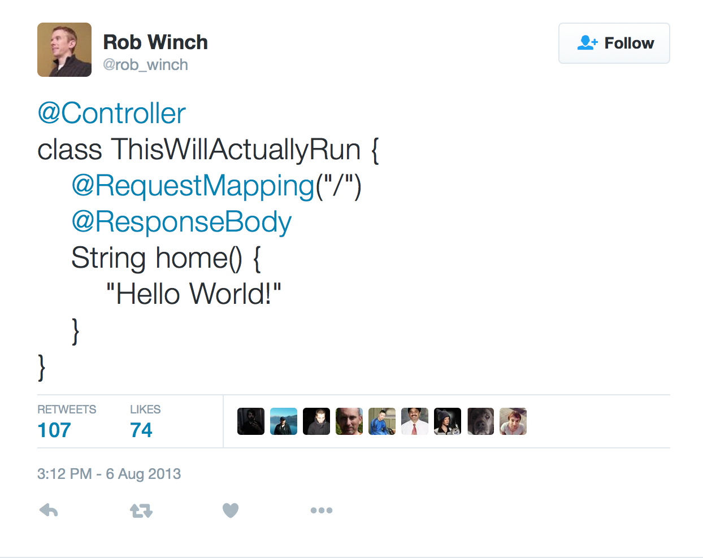

Java or JVM-based language (Groovy, Clojure, Scala, Kotlin)
Gradle or Maven
Spring or Spring Boot
Also known as inversion of control (IoC)
Hollywood principle: "Don't call us, we call you"
class Demo {
private final Foobar foobar;
public Demo() {
foobar = new Foobar(); // dependency NOT injected
}
public void doStuff() {
foobar.doStuff();
}
}
class Demo {
private final Foobar foobar;
public Demo(Foobar foobar) { // dependency injection
this.foobar = foobar;
}
public void doStuff() {
foobar.doStuff();
}
}
Modularization
Testable code
Decrease coupling
Behavior can be changed
Separate cross-cutting concerns
In plain English: reduce duplications
Aspect = concern
Logging
Transaction management
Authentication
class BookController {
private final UserService userService;
// ...
public Response index(Request request) {
if (userService.isAuthenticated(request) {
// ...
} else {
return Response.unauthorized();
}
}
public Response get(Request request) {
if (userService.isAuthenticated(request) {
// ...
} else {
return Response.unauthorized();
}
}
}
class BookController {
@Authenticated
public Response index(Request request) {
// ...
}
@Authenticated
public Response get(Request request) {
// ...
}
}
IoC container
Spring AOP framework
XML based configuration
Lots of things to configure
Convention over configuration
Easily extensible through "Starter POMs"
Micro-framework paradigm

https://twitter.com/rob_winch/status/364871658483351552$ sdk install springboot
$ spring run hello-spring.grooy
But a lot of people use it for
Not the same!
JavaBean: A plain Java class
JavaBean: Getter and setter, public constructor, serializable
class JavaBean {
private final String name;
public void setName(String name) {
this.name = name;
}
public void getName() {
return name;
}
}
Object instance managed by the Spring IoC container
@Bean, @Autowired and @PostConstruct
Ratpack
JDBC
Spring web
JPA